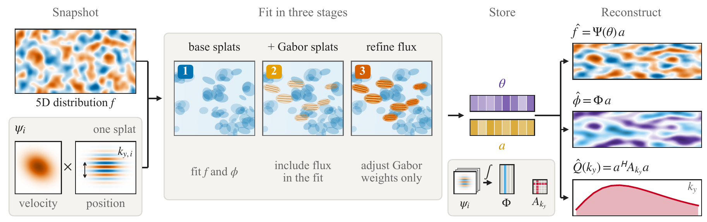
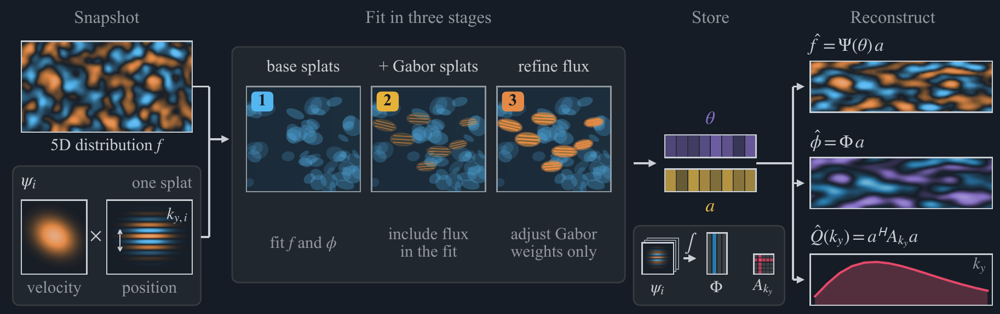
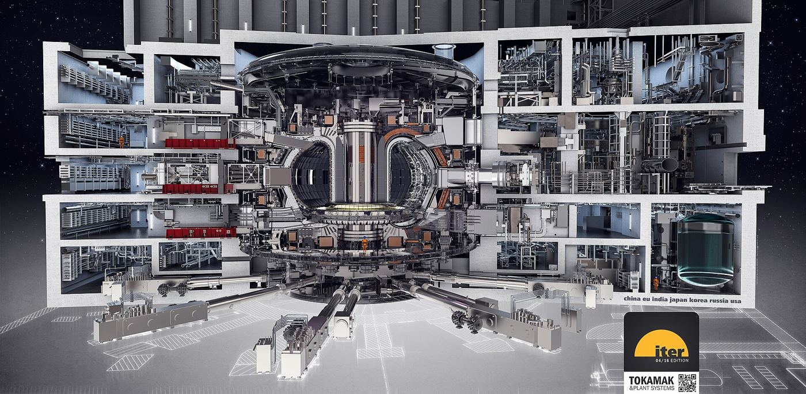

A plasma snapshot and its stored file
versionControlsslice
orange means more ions than the background, teal fewer
302× smaller
What the stored file keeps*
The heat flux is the heat turbulence carries out of the plasma. These simulations are run to predict it.
One snapshot from a plasma simulation, a block of 5D data. The plasma itself is 6D, with three positions and three velocities. Gyrokinetics averages over the fast circling of each ion around its field line, which leaves five dimensions.
GKW's output, the ground truth, is left of the divider. The reconstruction from our 295 KB file is right of it.
* Which of the three matters depends on what the snapshot is used for. Every lossy compression gives up some precision.
The method in four steps
version


Snapshot. We write the 5D data δf as a sum of splats. One splat is a velocity blob times a position blob. A Gabor splat also carries a wave. Fit. We fit base splats, then Gabor splats with the flux in the loss, then refine the flux. Store. We keep only the splats' parameters: their geometry θ and their amplitudes a. Reconstruct. We compute δf, the potential φ and the flux spectrum Q(ky) from formulas in θ and a.
Overview
Symbols and terms
| symbol | name | meaning |
|---|---|---|
| splat | Gaussian splat | One Gaussian splat, stored as its centre, widths, tilts and amplitude. A Gabor splat also carries a wave. |
| δf | distribution, field | How many more or fewer ions there are than in the background at each velocity and position. The 5D data of a snapshot. “field PSNR” is the PSNR of δf. |
| v∥, μ | the two velocities | Speed along the field line, size of the ion's ring around it (magnetic moment). |
| s, x, y | the three positions | Along the field line, radial (out of the plasma), binormal (across the field, within the surface). |
| ky | binormal mode | A wave along y. Mode 1 is the longest wave that fits the tube, mode 31 the finest. |
| φ | potential | Electrostatic potential, computed from δf. Linear in δf. |
| Q(ky) | flux spectrum | Heat flux carried by one mode (the spectrum lists modes 1 to 31). |
| Q | net heat flux | The sum of Q(ky) over the modes. |
| Q+, Q− | outward and inward parts | Heat carried out of and into the plasma, Q = Q+ − Q−. |
| κ | gross per net transport | (Q+ + Q−) / |Q|. Compared with ground truth: κ/κtruth = 1 is correct. |
| f̂, φ̂, Q̂ | the hat | The same quantity computed from a code's compressed snapshot instead of the original. |
| PSNR | peak signal-to-noise ratio | Reconstruction quality in dB (higher is better, 6 dB more halves the error). |
| 302× | compression ratio | Size of the raw snapshot divided by the size of the stored file, in bytes. |
GyroSplat stores a 5D snapshot of plasma turbulence as a sum of Gaussian and Gabor splats. We compute observables like the potential and the heat flux using exact formulas of the stored parameters, so we can fit them directly. At 302× smaller it gives the best potential reconstruction of all codes compared and a flux error below 10−6.
This blog post describes the method step by step, from the simulation data to the results, using real snapshots from the paper. GyroSplat is part of neural-gyrokinetics, our collection of machine-learning work on gyrokinetic turbulence (related projects).
15D data is too large to keep permanently
In a tokamak 
What 5D means
From a simulated tokamak to one snapshot
The two velocity dimensions
c · one slice, one velocity real data slice
The full snapshot contains such a map for 32 × 8 velocities on 16 slices, totalling 22.3 million numbers, 89 MB. GyroSplat stores it in 295 KB (302× smaller), with a flux error below 10−6 and the best potential reconstruction of all codes compared.
c · the two velocity dimensions version
An ion moves along the field line and circles around it. v∥ is its speed along the line, μ the size of its ring. Small rings belong to ions that circle slowly, large rings to ions that circle fast, since the ring grows with the speed of circling (Chen, 2016). We call them cold and hot, as a hotter plasma has more ions on large rings. At every point of the map in c the simulation stores a table of 32 × 8 numbers giving how many more or fewer ions than the background have each speed and ring size.
the table at one point of the slice
Real data. The map in c shows one cell of this table at every point. The snapshot contains all 256 cells at every point.
Potential and heat flux
δf itself is rarely the quantity of interest. We use two integrated quantities computed from it. The potential φ is the electric potential the ions create. It sets the drift that moves the plasma. The solver computes it from δf at every time step. The heat flux is the heat turbulence carries out of the plasma, the quantity these simulations are run to predict. A compressed snapshot is useful only if both can still be computed correctly.
For φ, we sum δf over velocity to get the density, then solve the field equation. φ is linear in δf. For the heat flux, we multiply δf by the particle energy and by the drift that φ causes, then sum over the tube. The flux is quadratic in δf.
Gyrokinetic equations
In outline, without the solver's normalization and geometry factors.
The gyrokinetic equation. The solver advances the perturbed distribution f (δf in this blog post) in time with the gyrokinetic equation, a reduced form of the Vlasov–Maxwell system (Peeters et al., 2009):
t is time, and ∇ is the gradient along the three positions. B is the magnetic field, B its strength and b = B/B its direction. v∥ b is motion along the field line. vD is the sum of the two magnetic drifts, one from the gradient of B and one from the curvature of the field lines. The third term is the force along the field line that slows ions entering a stronger field. Here μ is the ion's magnetic moment (the size of its ring) and m its mass. vχ is the drift from crossed electric and magnetic fields, computed from the potential φ. Thus vχ · ∇f is the nonlinear term that produces turbulence. S is the source term for collisions. A snapshot is f at one time. We compute the two quantities below from it.
See the GyroSwin blog post for further detail on this equation.
Potential. Sum δf over velocity to get the density n at every position, with each ion averaged over its ring (J0). The field equation then gives the potential from the density, one division per mode:
δf(v, x) means δf at the two velocities (v∥, μ) and three positions (s, x, y). J0 is a Bessel function that averages a mode over the ion's ring around its field line. GKW solves the equation in Fourier space across the field line and on a grid along it. n(k) is the density as a sum of these waves across the field. k is the wave number of one mode (kx along x, ky along y). D(k) is the field-equation factor for that mode. It sums two plasma responses to a potential. The ion polarization depends on k. The electron response uses a simple formula in this run (adiabatic electrons). D(k) depends on the mode, geometry and plasma parameters, but not δf. It is fixed for each mode. For the mode constant along y, the electron part also includes an average along the field line. φ remains linear in δf. Peeters et al. (2009) give the full D(k).
A sum and a division by a fixed number are linear operations. Twice the δf gives twice the potential, and the potential of a sum is the sum of the potentials.
Heat flux. The potential makes the plasma drift across the field with a speed proportional to how fast φ changes along y, which for mode ky is ky φ. The ions carry their energy ε with this drift:
ε is an ion's kinetic energy, v∥2 + 2μB in the solver's units. Each mode is a complex number giving its wave's size and phase. The star denotes complex conjugation, and i is the imaginary unit. −i ky φ is minus the derivative of φ along y. Up to a constant factor, it is the drift speed along x, out of the plasma. Re takes the real part. For two waves with the same ky, the real part of this product is their product averaged along y, up to a constant factor. Σs, x sums over positions s and x. The mode ky covers the y direction.
δf enters twice: once in the energy-weighted sum, and once inside φ. Twice the δf gives four times the flux. That is what quadratic means here. It has two consequences. Two errors multiply, so a small error in δf can change the flux by much more. And the flux of a sum is not the sum of the fluxes: every pair of terms contributes.
Looking ahead: δf as a sum of splats. Later in this blog post (chapter 2) we write δf = Σi ai ψi, a sum of splats. ψi is splat i's shape, a smooth function of velocity and position. ai is its complex amplitude. The potential is a weighted sum of the splats' potentials, with φi the potential of ψi alone. The flux is a sum over pairs of splats:
Aij is the flux-matrix entry for splats i and j at mode ky. It follows by inserting the sum into the heat-flux formula above. With Mij = Σs, x [ ∫ ε J0 ψi dv ]* · [ −i ky φj ], the entry is Aij = (Mij + Mji*) / 2. It depends on the two splats' shapes, not their amplitudes. Chapter 3 uses these two expressions to compute the potential and flux exactly from the stored parameters.
Cold and hot ions
At every position, δf is a small map over the two velocities (Fig. 1c). Both quantities require a sum over velocity, but with different weights. Both sums are those of gyrokinetic theory (Brizard and Hahm, 2007) as written in GKW (Peeters et al., 2009). We call the slow ions on small rings cold and the fast ions on large rings hot, as a hotter plasma has more ions on large rings (Chen, 2016).
a · strength of δf at each velocity average
b · energy of an ion ε = v∥² + 2μB
c · heat flux by velocity sum
Potential. Every ion counts once. We sum δf over all velocities, averaging each ion over its ring (the gyro-average), to get the density fluctuation. The field equation gives φ from this density. Slow ions on small rings, where δf is largest (panel a), make the largest contribution.
Heat flux. The potential causes the plasma to drift across the field, faster where φ changes quickly along y. Each ion carries its kinetic energy with this drift (panel b), so fast ions on large rings contribute many times more. We compute the heat flux as δf × energy × drift, summed over the velocities and over the tube. Broken down by velocity (panel c), of the net heat flux comes from μ between 0.9 and 2.1, although δf itself is largest at the smallest μ.
The two quantities depend on different parts of velocity space. A code can have a small error in δf overall and still be inaccurate where the heat flux originates.
All three plots have axes v∥, speed along the field, from −2.9 to 2.9, and μ, ring size, from 0 to 4. Panels a and c show snapshot data (a is slice 8, c the whole snapshot). Panel b uses its formula, with no data. In a and b a stronger tone means a larger value. In c, red is heat carried outward and grey-blue inward.
From δf to the potential and the heat flux
Controlsa · δf slice
b · potential φ slice
c · heat-flux density sum
d · flux spectrum Q(ky) sum
Every mode carries heat outward and inward at once. Here 56.5 out and 17.0 in give a net of 39.6. A small error in δf can change that balance substantially, so a good fit of δf does not guarantee a good flux.
Snapshot size. Each dimension of the 5D snapshot needs its own grid. The sizes multiply to give 32 × 8 velocities × 16 × 85 positions × 32 complex modes, 89 MB for one snapshot of this small run. A run has to compute hundreds of such snapshots to estimate the heat flux well, and runs used to study a reactor are far larger. compares these sizes with larger runs.
Snapshot sizes
This run uses a small setup with a coarse grid, one ion species, and electrons that are not simulated. We could still store the data at this size. Simulations used to study a reactor include magnetic fluctuations, more particle species and finer grids, each of which increases the data size.
Snapshot and run sizes size of one snapshot and of one run, log scale
Solid bars show our data as written by the simulation. Purple on the same bar shows the data stored with GyroSplat. Grey shows larger settings, and faded bars show ranges quoted in the literature. Each row has a note giving its source.
As a result, snapshots are deleted, leaving only a few diagnostics chosen before the run. Lossy compression could preserve the snapshots if they remain useful for analysis after the run, training learned surrogates such as GyroSwin, and restarts.
The use cases depend on the potential and heat flux for each mode, computed from δf, rather than δf itself. A bound on the error in δf does not guarantee their accuracy (Gong et al., 2022; Galletti et al., 2026). We therefore set four requirements that a compressed snapshot has to meet to serve these use cases.
We report four quantities: the field PSNRδf is what the file stores. Everything else is computed from it.The field PSNR measures how close decoded δf is to the ground truth, in dB.The bars show the error as a share of the largest value. Higher is better, and every 6 dB more halves the error.10 %20 dB5 %26 dB2.5 %32 dB1.3 %38 dB0.6 %44 dB10 log10 max |δf|2mean squared error, the potential PSNRφ drives the turbulent transport.The potential PSNR measures how close φ computed from decoded δf is to ground truth. It shows how well the small scales that drive turbulence are kept.The bars show the error as a share of the largest value. Higher is better, and every 6 dB more halves the error.10 %20 dB5 %26 dB2.5 %32 dB1.3 %38 dB0.6 %44 dB10 log10 max |φ|2mean squared error, the flux errorA reactor study needs the heat flux of every mode.The flux error is the part of the flux spectrum that is wrong, summed over the modes 1 to 31. 0 is exact.Σ |Q̂(ky) − Q(ky)|Σ |Q(ky)|Q̂ is the flux spectrum of the decoded snapshot, Q that of the ground truth., and κ, the gross transport per unit of net transport.
Q+ is the heat the modes carry outward and Q− the heat they carry inward, the red and grey-blue bars of Fig. 2 d. Their difference Q = Q+ − Q− is the net transport, the heat that leaves the plasma in total. Their sum is the gross transport, all the heat that moves in either direction. A code can match the net heat flux and still get both parts wrong. κ shows this.
κ = Q+ + Q−|Q|
An example for κ
An example for κ outward, inward and net heat flux of a single snapshot at 142×
The refined wavelet code has the right net heat flux, but about four times as much heat moves out and in. The flux error alone cannot tell that row from the ground truth, but κ can.
We evaluate a code using κ/κtruth. A value of 1 matches the ground truth. A larger value means more heat moves back and forth for the same net heat flux than in the ground truth.
25D splats for gyrokinetics
Gaussian splattingGaussian splatting stores a 3D scene as many small Gaussians. It was introduced to render new views of a scene from photographs.Each Gaussian g has a centre m, a shape L, an opacity and a colour c. To render an image, the Gaussians are projected onto the screen and sorted by depth. Each one adds its colour c to the colour C of a pixel with a weight α, as far as the Gaussians in front of it let light through. Gradient descent fits all their parameters to the photographs. Gaussians are added and removed during fitting.We keep the Gaussians g and fit them by gradient descent. We add the splats, each times its amplitude a, instead of blending them, so δf is linear in the amplitudes.g is one Gaussian at the point x, with centre m and shape L, as in Fig. 4. C is the colour of a pixel. ci is the colour of Gaussian i. αi is its opacity times its value at the pixel. The Gaussians are sorted from front to back.Kerbl, Kopanas, Leimkühler and Drettakis. 3D Gaussian splatting for real-time radiance field rendering. ACM Transactions on Graphics, 2023. (Kerbl et al., 2023) represents a 3D scene as a sum of Gaussian splats with soft boundaries, fitted by gradient descent. We use the same approach in GyroSplat for data on a 5D grid. The splats can be summed up, and their amplitudes can be negative, as δf can be.
One splat has a Gaussian shape. In 1D it has three parameters: a centre, a width and an amplitude. shows one line of real data fitted with these splats.
Line fit
A line of δf fitted with splats
The solid line shows real data, δf along one line of the slice. Purple bumps are the fitted splats, and the dashed line is their sum. Click the play button above to see which features the splats fit first, or add them with the slider. Panel c shows the fit by mode. It follows the data at low modes and stays below it at high modes.
a · one line of δf and its splats slice
b · where the line is slice 8 slice
c · power per mode log scale slice
The solid line is the ground truth. Purple shows each splat (thin) and their sum (dashed). A dot in a moves its splat. The map in b moves the line.
In 2D a splat is an ellipse with six parameters. In GyroSplat's 5D it is a velocity blob over the two velocities times a position blob over the three positions, with 16 parameters (Fig. 4).
One splat in velocity and in position
versionψ(v, x) =gv(v)
a · velocity blob over v = (v∥, μ)
gv(v) = e−½ ‖LvLv sets the shape of the velocity blob. It is a lower-triangular 2 × 2 matrix with 3 parameters: two widths on the diagonal and one tilt below it.Lv = w∥0twμw∥ and wμ are the widths along v∥ and μ. t tilts the blob. With t = 0 the exponent is −½ ((v∥ − m∥)² / w∥² + (μ − mμ)² / wμ²).−1(v − mvmv is the centre of the velocity blob, 2 parameters: its place along v∥ and along μ. The dot in panel a moves it.mv = (m∥, mμ))‖² centre mv: 2 parameters, shape Lv: 3
gx(x)
as a landscape height = value; drag the dot on the hill
gx(x) = e−½ ‖LxLx sets the shape of the position blob. It is a lower-triangular 3 × 3 matrix with 6 parameters: three widths on the diagonal and three tilts below it.Lx = ws00t1wx0t2t3wyws, wx and wy are the widths along s, x and y. t1, t2 and t3 tilt the blob between these directions.−1(x − mxmx is the centre of the position blob, 3 parameters: its place along s, x and y. The dot in panel b moves it in x and y.mx = (ms, mx, my))‖² centre mx: 3 parameters, shape Lx: 6 (3 widths, 3 tilts)
ground truth slice
c · rendering every splat is scaled by its amplitude, then all are added
f̂(v, x) = Σi ai ψi(v, x)Height in the landscape and colour in the map show the same sum of splats. In “many splats”, the faint mesh and ground truth map show real data, a 48 × 32 piece of slice 8 of the example snapshot at a fixed velocity. Your browser fits these data in 2D, adding splats one at a time, then optimizing them by gradient descent. The single splat and its velocity blob are schematic.
b · position blob over x = (s, x, y)
gx(x) = exp(−½ ‖Lx−1(x − mx)‖²) centre mx: 3 parameters, shape Lx: 6 (3 widths, 3 tilts)
a · velocity blob over v = (v∥, μ)
gv(v) = exp(−½ ‖Lv−1(v − mv)‖²) centre mv: 2 parameters, shape Lv: 3
c · ground truth
One splat is schematic; “many splats” fits a real 2D slice. *The solid surface is one Gaussian width, not its boundary: the Gaussian extends beyond it. In many splats, the faint mesh and ground-truth map show a 48 × 32 piece of slice 8 at one velocity, fitted in your browser.
as a landscape height = value; drag the dot on the hill
gx(x) = exp(−½ ‖Lx−1(x − mx)‖²) centre mx: 3 parameters, shape Lx: 6 (3 widths, 3 tilts)
a · velocity blob over v = (v∥, μ)
gv(v) = exp(−½ ‖Lv−1(v − mv)‖²) centre mv: 2 parameters, shape Lv: 3
c · ground truth
Height in the landscape and colour in the map show the same sum of splats. In “many splats” the faint mesh and the ground-truth map are real data: a 48 × 32 piece of slice 8 of the snapshot at one velocity, fitted here in 2D in your browser (placed one at a time, then optimized by gradient descent); the single splat and its velocity blob are schematic.
as a landscape height = value; drag the dot on the hill
gx(x) = exp(−½ ‖Lx−1(x − mx)‖²) centre mx: 3 parameters, shape Lx: 6 (3 widths, 3 tilts)
velocity blob over v = (v∥, μ)
gv(v) = exp(−½ ‖Lv−1(v − mv)‖²) centre mv: 2 parameters, shape Lv: 3
ground truth
Height in the landscape and colour in the map show the same sum of splats. In “many splats” the faint mesh and the ground-truth map are real data: a 48 × 32 piece of slice 8 of the snapshot at one velocity, fitted here in 2D in your browser (placed one at a time, then optimized by gradient descent); the single splat and its velocity blob are schematic.
as a landscape height = value; drag the dot on the hill
gx(x) = exp(−½ ‖Lx−1(x − mx)‖²) centre mx: 3 parameters, shape Lx: 6 (3 widths, 3 tilts)
velocity blob over v = (v∥, μ)
gv(v) = exp(−½ ‖Lv−1(v − mv)‖²) centre mv: 2 parameters, shape Lv: 3
ground truth
Height in the landscape and colour in the map show the same sum of splats. In “many splats” the faint mesh and the ground-truth map are real data: a 48 × 32 piece of slice 8 of the snapshot at one velocity, fitted here in 2D in your browser (placed one at a time, then optimized by gradient descent); the single splat and its velocity blob are schematic.
as a landscape height = value; drag the dot on the hill
gx(x) = exp(−½ ‖Lx−1(x − mx)‖²) centre mx: 3 parameters, shape Lx: 6 (3 widths, 3 tilts)
a · velocity blob over v = (v∥, μ)
gv(v) = exp(−½ ‖Lv−1(v − mv)‖²) centre mv: 2 parameters, shape Lv: 3
ground truth
Height in the landscape and colour in the map show the same sum of splats. In “many splats”, the faint mesh and ground truth map show real data, a 48 × 32 piece of slice 8 of the example snapshot at a fixed velocity. Your browser fits these data in 2D, adding splats one at a time, then optimizing them by gradient descent. The single splat and its velocity blob are schematic.
as a landscape height = value; drag the dot on the hill
gx(x) = exp(−½ ‖Lx−1(x − mx)‖²) centre mx: 3 parameters, shape Lx: 6 (3 widths, 3 tilts)
a · velocity blob over v = (v∥, μ)
gv(v) = exp(−½ ‖Lv−1(v − mv)‖²) centre mv: 2 parameters, shape Lv: 3
ground truth
Height in the landscape and colour in the map show the same sum of splats. In “many splats”, the faint mesh and ground truth map show real data, a 48 × 32 piece of slice 8 of the example snapshot at a fixed velocity. Your browser fits these data in 2D, adding splats one at a time, then optimizing them by gradient descent. The single splat and its velocity blob are schematic.
ψ(v, x) = gv(v)
a · velocity blob over v = (v∥, μ)
gx(x)
b · position blob a 3D Gaussian
a ψ(v, x)
c · Gaussian splat real part, at the outlined velocity
f̂ = Σi ai ψi
d · one splat slice
Stored per splat
gv(v) = e−½ ‖LvLv sets the shape of the velocity blob. It is a lower-triangular 2 × 2 matrix with 3 parameters: two widths on the diagonal and one tilt below it.Lv = w∥0twμw∥ and wμ are the widths along v∥ and μ. t tilts the blob. With t = 0 the exponent is −½ ((v∥ − m∥)² / w∥² + (μ − mμ)² / wμ²).−1(v − mvmv is the centre of the velocity blob, 2 parameters: its place along v∥ and along μ. The dot in panel a moves it.mv = (m∥, mμ))‖² centre mv: 2 parameters, shape Lv: 3
gx(x) = e−½ ‖LxLx sets the shape of the position blob. It is a lower-triangular 3 × 3 matrix with 6 parameters: three widths on the diagonal and three tilts below it.Lx = ws00t1wx0t2t3wyws, wx and wy are the widths along s, x and y. t1, t2 and t3 tilt the blob between these directions.−1(x − mxmx is the centre of the position blob, 3 parameters: its place along s, x and y. The dot in panel b moves it in x and y.mx = (ms, mx, my))‖² centre mx: 3 parameters, shape Lx: 6 (3 widths, 3 tilts)
Panels a to c are schematic. They show the velocity blob, the position blob on five slices along s, and the splat they form at the velocity outlined in a, scaled by its amplitude. Panel d sets this splat in front of the others. Its play button adds them up to a real slice of δf, the sum of 174 Gaussian splats.
A sum of splats. We approximate δf by adding splats. The splats are narrow where the data change quickly and wide where they are smooth. At 302× a snapshot contains 6,936 splats: 73,732 parameters in place of 22.3 million values. renders each splat on the grid and adds them.
Decoding
Decoding the splats into δf
f̂(u) = Σi ai ψi(u) decoding: render every splat ψi on the grid, scale it by its amplitude ai, and add
A few splats approximate the broad shape and its low modes. The small oscillations at high modes are fitted last. With 16 splats on one line of this slice (Fig. 3), the low modes have an error of 5 % and the highest still 50 %. These modes contribute to the heat flux, with 27 % in modes 8 to 31.
Spectral bias
Fig. 6 shows the flux spectrum after fitting plain Gaussian splats at 302×. When we fit them to δf alone, the potential and flux are inaccurate. Adding the potential to the loss corrects the potential. The higher modes of the flux are still missing. Smooth splats fit the low modes first. This is the spectral bias known from neural networks (Rahaman et al., 2019).
The flux spectrumA spectrum splits a quantity into waves along y and shows how much of it each wave carries.On the left, the thick line along y is the sum of two waves, mode 2 with size 0.68 and mode 5 with size 0.32. On the right, each bar stands at one mode ky and is as high as the wave of that mode. Low modes are broad structures and high modes fine ones.Q(ky) = Re Σs, x [ ∫ ε J0 δf dv ]* · [ −i ky φ ]The flux spectrum Q(ky) is the heat flux carried by the binormal mode ky, summed over all velocities, all slices along s and all x of the snapshot, for the modes 1 to 31. The modes add up to the net heat flux Q. of plain Gaussian splats
a · flux spectrum Q(ky) one snapshot, 302× sum
b · metrics 302× median
In our ablations, we test three ways to fix the spectral bias.
- More Gaussian splats. Ten times more plain splats (from the 1000× to the 100× file) lower the flux error only from 0.49 to 0.13.
- Fit the flux directly. We apply Gauss–Newton to the flux, using Gaussian splats alone (the third row in Fig. 6). The flux spectrum is accurate, but the potential becomes inaccurate.
0.036flux error, down from 0.32−26.8 dBpotential PSNR, 25.9 dB before1.74×too much outward and inward transport
- Modify the splat. Neural fields use sine features to reduce spectral bias (Tancik et al., 2020), and we multiply the splat by a wave instead, which gives a Gabor splat as used for images and surfaces (Wurster et al., 2024; Watanabe et al., 2025).
3Gabor splats and exact physics
What a Gabor function adds. A Gaussian times a wave (Gabor, 1946) forms a short wave packet. The Gaussian sets its position, and the wave sets its frequency. A plain Gaussian is local in space but only reaches frequencies near zero. A Fourier mode has one frequency but fills the whole domain. A Gabor function is local in both.
The Gabor function
Controlsa · the Gabor function along y position space, real part
b · its spectrum frequency space, power per mode
The Gabor splat. Splats with waves have been used for images and surfaces (Wurster et al., 2024; Watanabe et al., 2025). We extend these Gabor splats to our 5D splat. The heat flux is carried by modes ky, so we let the wave run along y. One Gabor splat is then concentrated around one flux mode. We build GyroSplat from these splats (Fig. 8).
The Gabor splat
versionψ(v, x) = gv(v)
a · velocity blob over v = (v∥, μ)
gx(x)
b · position blob a 3D Gaussian
ei ky y
c · wave along y
a ψ(v, x)
d · Gabor splat at the outlined velocity
e · potential of the splat
f · its potential per mode |φ(ky)|², largest = 1
Stored per splat one more than a Gaussian splat (Fig. 4), the wave mode ky
a · velocity blob
b · position blob
c · wave along y
d · Gabor splat
Move a dot; choose a parameter below the plots. Keyboard: Tab, then arrows.
Schematic on one s slice. Same velocity blob and envelope as Fig. 4; the wave adds only ky: 17 parameters instead of 16.
velocity blob unchanged
position blob no wave
wave along y
Gabor splat in position
A Gabor splat is the Gaussian splat of Fig. 4 times a wave along y. The wave adds one parameter, its mode ky, so a Gabor splat stores 17 parameters instead of 16. The velocity blob and the envelope stay the same. We add only the stripes along y. The two sliders of Fig. 7 control the wave and the width.
Gabor from Gaussians
One Gabor splat built from plain Gaussians
a · along y Gabor splat and the sum of the Gaussians
b · their spectra power per mode
The heat flux is carried by the binormal modes ky = 1 to 31. A plain splat puts nearly all of its potential into mode 0, which carries no heat flux. A wave along y shifts the potential into modes that carry heat flux. Panels e and f of Fig. 8 show this using the actual field solve.
The wave and the modes of the potential
a · the splat δf at a fixed velocity
b · its potential
c · its potential per mode |φ(ky)|², largest = 1
Hold an icon around the splat and drag it, or tap it.
A wave shifts a splat's potential into modes that can carry heat flux. The flux itself requires two splats. One splat alone carries none. How much flux a pair carries depends on the relative phase of its two splats, as shows.
Splat pairs
Heat flux from pairs of splats
Two Gabor splats lie on the same spot. The slider turns the phase of splat 2, which slides its stripes along y past those of splat 1. Q is the net heat flux that the pair carries, summed over the modes, and Q(ky) is the share of one mode.
a · the two splats in one map outlines: 1 cold, 2 hot (dashed); each alone: Q = and
b · potential of the pair GKW's field solve
c · the pair's heat flux Q as a function of phase
d · its share per mode, Q(ky) at this phase
e · the flux matrix A entries ai* Aij aj at this phase
Flux matrix
f · their potential slice 8, splats numbered
g · the flux matrix
h · the pair
The matrix contains up to 16 splats with cold, warm and hot velocity profiles and wave modes 2 to 8. Their flux is aHAa, a sum of pair terms 2 Re(ai* Aij aj). The diagonal is zero. Splats 1 and 2 are the pair above, and the phase slider controls splat 2.
In GyroSplat, we use groups of seven Gabor splats, with one shared envelope and seven waves. A group stores 35 parameters where seven separate Gabor splats would store 119 how it adds upseven separate Gabor splats141414141414147 × 17 = 119one group of seven1414 + 7 × 3 = 35 14 envelope parameters for velocity blob and position blob 3 per splat for wave mode ky and the complex amplitudeThe fit solves all amplitudes at once. A wave the data do not need gets an amplitude near zero. In a group, this uses 3 parameters rather than 17.At 302× we store 3,254 single splats × 17 + 526 groups × 35 + 4 for normalization = 73,732 parameters for 6,936 splats..
Gaussian–Gabor comparison
Comparison of Gaussian and Gabor splats on a real slice
a · ground truth slice
b · Gaussian splats slice
c · Gabor splats slice
Exact readouts
With the splat geometry θ fixed (centres, shapes and waves), the snapshot is linear in the amplitudes a. The potential is linear in f, so we can write it as a matrix times a. Column i of Φ is the potential of splat i. The heat flux is quadratic in f, so for each mode it is a quadratic form in a:
We compute both quantities and their gradients exactly, without decoding the 5D snapshot. The diagonal of A is zero. The flux comes from pairs of splats, and its sign depends on their relative phase (Fig. 19).
How GyroSplat fits a snapshot
We also use this linearity when fitting a snapshot. GyroSplat fits in three stages. About three quarters of the stored parameters go to Gaussian base splats and one quarter to Gabor splats.
The three fitting stages
a · flux spectrum Q(ky) sum
b · metrics and time after this step median
The three stages
Each row shows one step, with the quantities compared in the loss, the parameters we fit, and the resulting metrics.
4All codes at the same file size
We compare GyroSplat with classical compressors (Fourier, wavelets, PCA, ZFP, SZ3), autoencoders and neural fields. Every code gets the same number of bytes, and the metrics are medians over 39 held-out snapshots.
The other codes are also refined with the same objective. Refinement fits the Fourier and Haar coefficients, the latents of the autoencoders, and the neural field through the physics stage of PINC (Galletti et al., 2026).
Fig. 14 shows every code in the sweep at eight file sizes, first with all four metrics side by side.
Quality by file size, 1000× to 100×
median
Table
Decoded snapshots
GyroSplat has the lowest flux error among the codes swept over all sizes and the best potential from 600× down. At the two smallest sizes, the neural field with physics is slightly ahead on the potential. Codes fitted to δf alone reach a higher field PSNR but give inaccurate potential and flux. For each code at one file size, gives the table and the decoded test snapshot.
One snapshot
Every code on one snapshot
Every code stores the same snapshot in the same number of bytes. The table gives the four metrics at the chosen file size. The decoded snapshots of each code can be opened below it.
a · metrics at the chosen file size median
Decoded snapshots
b · decoded snapshots the example snapshot slice
Notes
The tiles show the example snapshot decoded from each code's file. The table gives the paper's medians over all 39 test snapshots, averaged over seeds for codes that use them. ± gives the spread across snapshots. A tile and its table row can therefore differ a little. At 302× and 142× we use the runs from the paper's main table. Other sizes use its size sweep. Autoencoder results are available at 302× only, and refined Haar and db4 at 302× and 142×.
Refinement lowers every code's flux error. Only the splats preserve δf, potential and flux together. A low flux error can hide incorrect transport, which κ detects.
Transport
Same net heat flux, different transport
a · outward, inward and net heat flux one snapshot, 142× sum
b · the same numbers sum
Spectral bias
Spectral bias in the other codes
flux kept per mode predicted over ground truth, 302× sum
5Where the heat flux comes from
Because the code is linear, we can evaluate any subset of splats directly. In , you can switch the eight groups of splats per mode in our 302× fit on and off.
Group by group
The 302× fit, group by group
a · δf, ground truth slice
b · δf, splats switched on slice
c · potential, ground truth slice
d · potential, splats switched on slice
With all groups on, 53 % of the heat flux comes from pairs of base Gaussians and 46 % from base–Gabor pairs. The Gabor splats alone carry almost no heat flux, but removing them removes half of the flux.
In Fig. 19, you can place up to six splats and see the potential and heat flux they produce. Try one splat, then two with the same velocity profile, then a cold and a hot one.
GyroSplat Playground
a · your splats envelopes and waves
b · their potential GKW field solve
Controls
Sliders
c · flux spectrum Q(ky)
d · heat flux contributions each splat alone (diagonal) and each pair
Cold and hot splats
a · cold a splat's velocity profile
b · hot a splat's velocity profile
c · real snapshot its heat flux over velocity sum
Every splat is a velocity blob times a position blob. The velocity blob determines where in velocity space the splat raises or lowers the ion distribution (δf can have either sign). Cold profiles are centred at small μ, with small gyration rings and a narrow spread of speeds along the field. Hot profiles are centred at larger μ, with larger and faster rings and a wider spread along the field, giving more energy. Both describe the same ion species. Cold and hot are our names for these two example profiles. Each is a Gaussian in velocity space that we placed by hand, not a fit to the data. The names follow plasma physics, where a hotter plasma has faster ions on larger rings (Chen, 2016), and the heat flux counts each ion with its energy (Peeters et al., 2009).
A pair's dependence on velocity profiles. In each Fourier cell (s, kx, ky), the heat flux of two splats is exactly one velocity factor times one spatial factor: (A1M2 − A2M1) × Im(Ŝ1* Ŝ2). A measures how strongly a profile contributes to the potential (its gyro-averaged density), and M how strongly it carries heat (its energy). The Ŝ are the spatial patterns. Their imaginary overlap measures how far they are out of phase. Two splats with the same profile have A1M2 = A2M1, so their pair carries no heat flux, whatever their shapes. Moving the cold splat's centre to larger μ alone gives the pair a flux of 0.22 here. Widening it alone gives 0.06, and both changes together, giving the hot profile, give 0.65.
In the real data. The snapshot's δf is largest at small energies, but its heat flux is concentrated at higher energies: 93 % of the net heat flux comes from μ between 0.9 and 2.1 (right).
6Summary and limitations
The four requirements from the start, at 302×:
The field PSNR remains competitive at 37.6 dB. Plain splats reach 39.3 dB, with a potential PSNR of 7 dB and a flux error of 27 %.
Limitations and next steps
- We fit only one view of the flux. Other views are less accurate: the flux over velocity space has a relative error of 0.43 (the autoencoder: 0.11). They are also quadratic in the amplitudes, so we could include them in the objective.
- Encoding requires optimization. It takes 169 s per snapshot at 302× on one GPU, twice as long as the neural field with physics (85 s). Decoding takes 0.04 s, four times faster, and fitting uses a third of the GPU memory (19 GB compared with 55 GB). A network could predict the splats before we refine them with Gauss–Newton.
- One family of data. We use electrostatic GKW turbulence with kinetic ions and adiabatic electrons, 39 snapshots from 27 trajectories. We plan to extend this to kinetic electrons and electromagnetic fields.
Related projects
GyroSplat is part of neural-gyrokinetics, our work on machine learning for gyrokinetic turbulence.
Citation
GyroSplat: A Linear Representation of Fusion Plasma Turbulence with Direct and Differentiable Physics. G. Gutenbrunner, A. Radler, G. Galletti, J. Brandstetter, F. Paischer. RPS Workshop at NeurIPS 2026.
@inproceedings{gutenbrunner2026gyrosplat,
title = {GyroSplat: A Linear Representation of Fusion Plasma Turbulence with Direct and Differentiable Physics},
author = {Gutenbrunner, Gerald and Radler, Andreas and Galletti, Gianluca and Brandstetter, Johannes and Paischer, Fabian},
booktitle = {RPS Workshop at NeurIPS 2026},
year = {2026},
url = {https://representations-physical-sciences.github.io/workshop-2026/papers/paper-133.html}
}
References
- Kerbl, Kopanas, Leimkühler, Drettakis. 3D Gaussian splatting for real-time radiance field rendering. ACM Transactions on Graphics, 2023.
- Wurster, Zhang, Zheng. Gabor splatting for high-quality gigapixel image representations. ACM SIGGRAPH 2024 Posters.
- Watanabe, Tojo, Umetani. 3D Gabor splatting: reconstruction of high-frequency surface texture using Gabor noise. Eurographics 2025 Short Papers. arXiv:2504.11003
- Gabor. Theory of communication. Journal of the IEE, Part III, 93(26):429–441, 1946.
- Galletti et al. Physics-informed neural compression of high-dimensional plasma data (PINC). arXiv:2602.04758, 2026.
- Paischer et al. GyroSwin: 5D surrogates for gyrokinetic plasma turbulence simulations. arXiv:2510.07314. NeurIPS 2025.
- Peeters et al. The nonlinear gyrokinetic flux tube code GKW. Computer Physics Communications 180(12):2650–2672, 2009. doi:10.1016/j.cpc.2009.07.001
- Brizard, Hahm. Foundations of nonlinear gyrokinetic theory. Reviews of Modern Physics 79(2):421–468, 2007. doi:10.1103/RevModPhys.79.421
- Chen. Introduction to Plasma Physics and Controlled Fusion, 3rd edition, chapters 1 and 2. Springer, 2016. doi:10.1007/978-3-319-22309-4
- Gong et al. Maintaining trust in reduction: preserving the accuracy of quantities of interest for lossy compression. SMC 2021, CCIS 1512:22–39, 2022.
- Rahaman et al. On the spectral bias of neural networks. ICML 2019.
- Tancik et al. Fourier features let networks learn high frequency functions in low dimensional domains. NeurIPS 2020.
All results are the paper's revised results at equal file sizes (November 2026). They are medians over 39 held-out snapshots, with seeded codes averaged over seeds. A quantity can differ slightly between figures (GyroSplat's flux error at 302× ranges from 5.1 to 7.6×10−7). The paper's tables give means over seeds. The ablation figures use one seed, the size sweep uses its own runs, and figures decoding an archived code evaluate that snapshot. Figs. 1 and 2 show GKW's output and solver results for the example snapshot (the test simulation iteration_13 at time t = 100). Figs. 8, 11 and 19 run GKW's field solve in your browser on the geometry of that snapshot, for splats you set. Fig. 18 decodes our archived 302× code of that snapshot. Figs. 3, 4, 5 and 12 fit one line or one slice of the snapshot in 1D or 2D. Figs. 7 and 9 are 1D schematics. All other results use the 5D method.